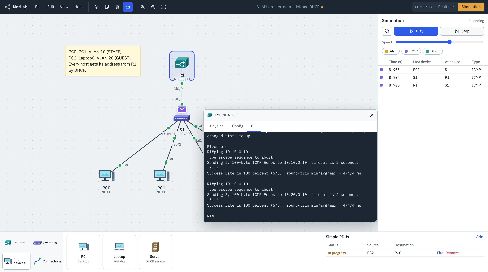

Build a network. Watch every packet cross it.
NetLab is a free, open-source network simulator. Drag in routers, switches and PCs, cable them up, configure them from an IOS-style command line, then step through ARP, ICMP and DHCP one hop at a time.
Free for Windows, macOS and Linux, and in the browser on phones and tablets. Other platforms

The labs from your networking course, on your own laptop.
NetLab simulates the parts of a network you get tested on, with the commands, prompts and show outputs you'll see on real gear.
- Real device lineupFour router models with Gigabit, serial and fiber ports, four switch models including a multilayer switch, hubs, PCs, laptops, servers, printers and IP phones.
- CablesConsole, straight-through, cross-over, fiber and serial DCE/DTE. The wrong cable keeps the link down, just like in the lab.
- SwitchingMAC learning, flooding and filtering. Inspect it with
show mac address-tableor the Inspect tool. - VLANs and trunksAccess ports, 802.1Q trunks, native and allowed VLANs,
show vlan briefandshow interfaces trunk. - RoutingStatic and default routes, router-on-a-stick, inter-VLAN routing on a multilayer switch, and serial WAN links with
clock rateand PPP. - DHCPRouter pools with excluded ranges, a DHCP server device, and relaying across subnets with
ip helper-address. - Device securityEnable secret, console passwords, MOTD banners, password encryption,
copy run startand reload. - NetLab Pro AIDescribe what you want and the assistant plans the VLSM, addresses every device and writes the routes and configuration. You check each change before it's applied.
- Simulation modePause time, step frame by frame, filter by protocol and open any PDU to read its Ethernet, IP and ICMP fields.
R1#configure terminal Enter configuration commands, one per line. End with CNTL/Z. R1(config)#interface g0/0.10 R1(config-subif)#encapsulation dot1Q 10 R1(config-subif)#ip address 10.10.0.1 255.255.255.0 R1(config-subif)#end R1#ping 10.10.0.10 Type escape sequence to abort. Sending 5, 100-byte ICMP Echos to 10.10.0.10, timeout is 2 seconds: !!!!! Success rate is 100 percent (5/5), round-trip min/avg/max = 4/4/4 ms
Download NetLab
The desktop app works offline and opens and saves .nlab files. The browser version is the same app and keeps your work in the browser.
| Platform | File | |
|---|---|---|
macOS Apple silicon (M1 and later) | .dmg | Download |
macOS Intel | .dmg | Download |
Windows Windows 10 and 11, installer | .exe | Download |
Windows For managed computers and labs | .msi | Download |
Linux Any distribution | .AppImage | Download |
Linux Debian and Ubuntu | .deb | Download |
Browser Chrome, Edge, Firefox, Safari | No install | Open |
The installers aren't code-signed yet. On macOS, right-click NetLab in Applications and choose Open the first time. On Windows, choose More info, then Run anyway.
Open source, and yours to change.
NetLab is MIT licensed. The simulation engine, the command line and the interface are plain TypeScript, and the desktop app is a small Tauri shell around the same code. Report a bug, add a command, or build a lab for your class.
NetLab is an independent project from HarNova Technology. It isn't affiliated with or endorsed by any network equipment vendor.
- LicenseMIT
- Desktop downloadAbout 5 to 10 MB
- Works offlineYes, on desktop
- Account neededNo
- File format.nlab (JSON)